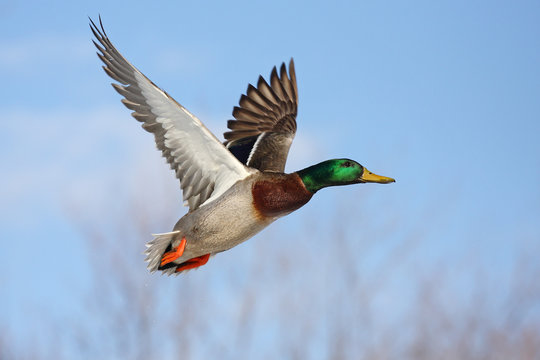

Birds are warm-blooded vertebrates (vertebrates have backbones) and are the
only animals with feathers. Although all birds have wings, a few species can't fly.
Learn more about your favorite birds!

You'll find mallard ducks near ponds, marshes, streams, and lakes, where they feed on plants, invertebrates, fish, and insects. Mallards are dabbling, or surface feeding, ducks because they eat by tipping underwater for food head down, feet and tail in the air rather than diving.Mallards also forage and graze for food on land.
Common Name: Mallard Duck
Scientific Name: Anas platyrhynchos
Location: North America and Eurasia
Life Span: 5 to 10 years
Fact: Mallards swim with their tail held above the water.
The male mallard duck, called a drake, sports a glossy green head, a white ring around its neck and a rich, chestnut-brown breast. The mottled brown female mallard looks downright dull next to the male's showy feathers.
The mallard duck's outer feathers are waterproof, thanks to oil that’s secreted from a gland near the tail. Beneath this tightly packed waterproof layer of feathers lies a soft, warm layer of feathers called down. Twice a year, mallards molt, or shed, their flight feathers, temporarily grounding the birds for several weeks until the feathers grow back.
Mallards fly in groups called flocks. Like most migratory birds, mallards fly in the famous V formation. During winter migration, mallards fly south in search of warm weather, often resting at the same spots year after year. Migrating mallards can travel great distances, relying on rivers, coasts, and valleys to find their way.
A female mallard lays up to a dozen eggs in nests on the ground near water, often in a small depression or tree hole. She lines the nest with warm down plucked from her undercoat. Soon after birth, baby ducks, called ducklings, open their eyes. A little more than a day after hatching, ducklings can run, swim, and forage for food on their own. They stay in the nest for less than a month. A group of ducklings is called a brood. Outside the nest, the brood sticks close by the mother for safety, often following behind her in a neat, single-file line.

These seabirds are known for their wild look and sound—no wonder they're sometimes called the rock stars of the penguin world.Many penguins thrive in freezing conditions. They shrug off subzero winds, belly-surf over glaciers, and swim underneath ice.
Common Name: Fiordland Penguin
Scientific Name: Eudyptes pachyrhynchus
Location: New Zealand
Life Span: 10 to 20 years
Fact: Fiordland penguins have white stripes on their cheeks that flare out when they feel threatened.
But not Fiordland penguins. Also known as Fiordland crested penguins or tawakis, these birds live in the rainforests of New Zealand. With their distinctive plumage, unusual squawks, and hard-to-find cave nests, tawakis stand out from their fellow black-and-white relatives.
Tawakis spend so much time in the ocean that barnacles—tiny, sticky crustaceans that often latch on to whales attach themselves to tawakis' tails, too! Fiordland penguins often lay two eggs at a time, but only one chick usually survives.

Waddling across an ice-covered colony? No thanks! Temperatures in the temperate, or mild, rainforests of southwest New Zealand can hit a toasty 70°F. That's why Fiordland penguins can be smaller they don't need to hold in as much body heat as larger penguins that live in Antarctica. They also have fewer, less dense feathers than penguins that live on the ice and need heavy plumage to keep them warm.

Other crested penguin species such as rockhoppers breed with their nests squeezed close together in colonies of thousands. But Fiordland penguins lay their eggs in isolated caves, bushes, and tree stumps. The birds aren't just being unfriendly: It rains a lot where they live in New Zealand, and tawakis prefer to be tucked away. Secretive spots also provide protection from humans, who used to hunt the birds for meat. No wonder Fiordland penguins like to stay out of sight!

During the mating season, male blue-footed boobies strut around with exaggerated movements that show off their fabulous blue feet. Females tend to pick the males with the bluest feet as their mates.Blue-footed boobies sleep at night, generally on land, and feed at sea during the day. Sometimes boobies feed in a group. They often fly far out to sea to look for their prey—small fish such as anchovies.
Common Name: Blue-Footed Booby
Scientific Name: Sula nebouxii
Location: Along the Eastern Pacific coastline.
Life Span: 17 years
Fact: Blue-Footed Booby are seabirds that are recognized by their bright blue feet.
The birds either zip underwater for fish from a floating position on the water's surface or make awesome dives from as high as 80 feet (24 meters) in the air. Once it spots a school of fish, the bird folds those wings back, becoming a streamlined, torpedo-shaped predator. The booby dives into the water among the school of fish, using its long beak to grab dinner.
Parents take care of their chicks feeding and protecting them—until they're about two months old. At that point, young boobies can survive on their own.

During courtship, the male Blue-Footed Booby performs a unique dance, lifting its bright blue feet high in the air and strutting around the female. The female chooses her mate based on the brightness of his feet and the quality of his dance moves! Blue-Footed Boobies are expert divers, plunging into the ocean from heights of up to 100 feet (30 meters) to catch fish, squid, and crustaceans.
Blue-Footed Boobies have a specialized gland located above their tail called the "salt gland," which helps to excrete excess salt from their bodies, allowing them to drink seawater and stay hydrated in coastal environments. They also have a unique feather structure that allows them to maintain a layer of air next to their skin, keeping them warm in cold water. Furthermore, Blue-Footed Boobies are known to be quite vocal, using a variety of calls to communicate with each other, including a distinctive "ka-ka-kah" sound used for contact calls and a loud "aa-aa-aa" sound used for alarm calls. Overall, the Blue-Footed Booby is an fascinating bird with many unique adaptations and behaviors!

When you see a snowy owl, it's clear how the bird probably got its name: they're snow-white. Males are generally whiter than females. As males grow older, they get whiter. The females never become completely white remaining brownish with darker markings.
Common Name: Snowy Owl
Scientific Name: Bubo scandiaca
Location: Snowy Owl mainly live in the Arctic in open, treeless areas called tundra.
Life Span: 10 years
Fact: Their feet are covered with feathers, like fluffy slippers.
These large owls mainly live in the Arctic in open, treeless areas called tundra. Snowy owls perch on the ground or on short posts. From there they patiently watch for prey. Their favorite target is lemmings—small mouselike rodents—but they also hunt for other small rodents, rabbits, birds, and fish.
Snowy owls have excellent eyesight, but they obviously can't see their prey when it's underneath snow or a thick layer of plants. To capture those meals, the owl relies on its other keen sense: hearing.

In flight, snowy owls generally cruise low to the ground. Once they spot their prey, they approach it from the air, and snatch it up using the large, sharp talons, or claws, on their feet.Most owls sleep during the day and hunt at night, but the snowy owl is active during the day, especially in the summertime. They tend to be most active at dawn and dusk.Snowy owl pairs usually mate for life. Female snowy owls lay from 3 to 11 eggs at a time, in a nest built on the ground. When there is plenty of food available, snowy owls tend to lay more eggs than when food is scarce. Lemmings make up the main part of the snowy owls' diet, and lemming population numbers rise and fall naturally. Sometimes, if there is not enough prey around to feed baby owls, the adult pair won't lay any eggs at all until the supply of food improves.

The female snowy owl sits on her eggs until they hatch. The male feeds her while she keeps their eggs warm and safe. After about one month, the eggs hatch. Babies are covered in soft white down when they hatch. As new feathers replace the down, the birds become light brown. The young leave the nest less than a month after they hatch. By the time they're about a month and a half old, the young owls can fly well, but their parents take care of them for another ten weeks or more.
The pileated woodpecker is one of the largest woodpecker species in North America and its look is unmistakable—a large black bird with white on each side of its neck and a red crest on its head. When it flies, white flashes are visible under its wings.
Common Name: Pileated Woodpecker
Scientific Name: Dryocopus pileatus
Location: The southern half of Canada, throughout the eastern United States, and along parts of the Pacific Coast and northern Rockies
Life Span: 12 years
Fact: The Pileated Woodpecker has a loud, far-carrying call that sounds like a laugh: "kuk-kuk-kuk" or "kuk-kuk-kuk-kuk.
The sound of the pileated woodpecker's hammering carries a long distance through the woods where they live. They drum to attract mates and to establish the boundaries of their territory—warning other males away.
They use their beaks to peck and dig under bark to find carpenter ants, beetle larvae, and other insects and will often dig large, rectangular holes in trees to uncover their meals. Some holes are so big that they weaken small, young trees. The birds also strip pieces of bark from trees looking for food. Generally, however, pileated woodpeckers help keep a forest healthy by eating wood-boring insects.
A nesting pair of pileated woodpeckers usually makes a nesting hole in a large, older tree. During the day, both parents take turns incubating, or sitting on, the eggs to keep them warm. At night, only the male incubates the eggs. They generally lay four eggs at a time, which take about two weeks to hatch.
Both parents incubate eggs for about 16 days, and the young leave the nest after 24-28 days.In addition to insects, they also eat sap, nuts, and fruits, particularly in winter when insects are scarce.Adults have few natural predators, but young and eggs are vulnerable to snakes, raccoons, and other predators.

Swoosh! A peregrine falcon can dive up to 200 miles (323 kilometers) an hour to capture prey in flight, striking in midair with its outstretched talons, or claws. Peregrines usually hunt with either a swift chase or a fast dive. Starlings, pigeons, and doves are among their favorite meals.
Common Name: Peregrine Falcon
Scientific Name: Falco peregrinus
Location: Every continent except Antarctica and many oceanic islands.
Life Span: Up to 17 years
Fact: When they enter a hunting dive called a stoop, they can reach up to 200 to 240 miles per hour..
A common bird of prey (a group of hunting birds that includes such birds as hawks and eagles), the peregrine is an adaptable falcon that can be found in almost any habitat. Peregrines live from cold tundra to hot deserts, from sea level to high in the mountains. Their adaptability even allows them to thrive in cities. They live in a greater variety of habitats than almost any other bird of prey. Some peregrine falcons migrate in the winter from their nesting grounds in the Arctic all the way to South America—a round-trip distance of up to 15,500 miles (24,945 kilometers). They make the return trip north when it's time to mate and lay eggs.
Peregrines don't build nests. They usually just find a shallow dip in some rocks or scrape a depression in the soil on the ledge of a cliff, or even use the ledge of a building. Female peregrines lay two to four eggs at a time. Parents incubate the eggs for about a month until the eggs hatch. Peregrine chicks stay in the nest for up to six weeks, by which time they've learned to fly.
Peregrine falcons in the United States were listed as an endangered species after their numbers dropped dangerously low between the 1950s and the 1970s. Certain pesticides used by farmers—including DDT—harmed the peregrines by causing their eggshells to be dangerously thin—so fragile that they broke when the parents tried to incubate them. Laws were enacted to ban DDT and, fortunately the ban, along with other conservation efforts, led to the recovery of the species. In fact, scientists think there now may be more peregrines in some parts of their range than there ever used to be!
The Peregrine Falcon is a majestic and awe-inspiring bird of prey, renowned for its incredible speed, agility, and hunting prowess. Reaching lengths of up to 20 inches (50 cm) and weighing up to 3.5 pounds (1.6 kg), it is one of the largest falcons in the world. The Peregrine Falcon is a master of the skies, capable of reaching breathtaking speeds of up to 242 miles per hour (390 km/h) during its characteristic hunting dive, known as a stoop. This makes it the fastest member of the animal kingdom! With its sleek, streamlined body, powerful wings, and exceptional eyesight, the Peregrine Falcon is perfectly adapted to its role as a formidable hunter, feeding on a variety of medium-sized birds, from pigeons to songbirds. Found on every continent except Antarctica, the Peregrine Falcon is a widely distributed and highly adaptable species, thriving in urban environments as well as coastal cliffs and mountains. After facing significant declines due to pesticide poisoning in the mid-20th century, conservation efforts have helped recover Peregrine Falcon populations, and the species has been removed from the US Endangered Species List.